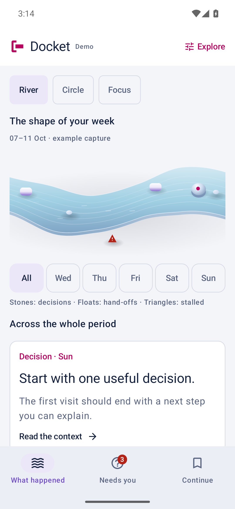
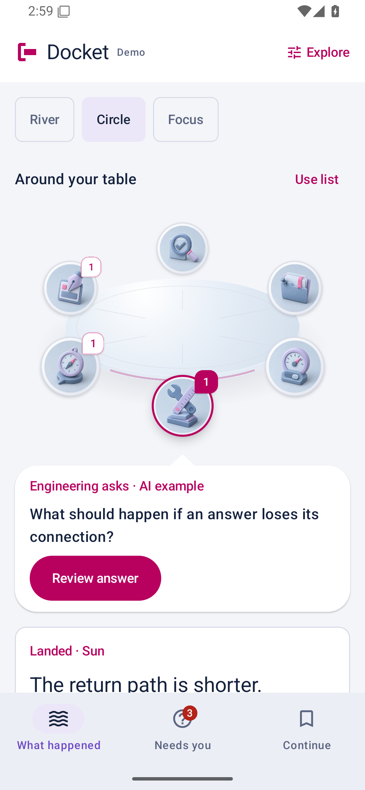

A river is an interesting way to show a week
You come back to a project after a day away. Some work has landed. A decision has changed. Someone needs an answer. Before doing anything else, you need to recover the shape of what happened.
Decision Docket is our upcoming product, being developed under our Navivra organization. It is concerned with that return: finding the reason behind a decision and continuing with the relevant context. This note follows one part of its design work—the attempt to give that experience a distinctive form on Android.
A river offers a useful starting point. Time gives it direction. Changes give each stretch something to inspect. Decisions and hand-offs can become recognizable marks. Touch a day and the corresponding work comes into view.
The attraction is easy to understand. The responsibility takes longer.
The picture has to explain something
In Docket's web Recap, the river is wider where more work landed or changed. That is a way of showing observed activity. The reader still needs titles, dates and source context to understand what it means.
One distinction matters especially: the past and the present need different places. Selecting Friday's history should never make today's unanswered question disappear. A beautiful filter would be a poor one if it taught a person that the work no longer needed them.
This is where a visual metaphor earns its place. It helps someone orient themselves, then makes the relevant detail easier to reach. Shape carries meaning; words keep that meaning accountable.
A circle gives a perspective a place
Circle approaches the same material from another direction. Six familiar roles sit around a table. Choose a perspective and bring it forward, then read the work associated with it.
The web Recap uses those roles to present existing categories of work. Their character should never suggest a conversation, authorship or live presence that the underlying information does not establish.
For the Android experiment, the selected question appears beneath the scene, in a speech bubble connected to the front seat. The question should be close enough to act on, without covering another perspective or turning the page into a diagram that must be decoded.
The turn can help connect a choice to its result. The ordinary list has to carry the same work. Both belong to the design.
More realism did not settle the problem
An early revision pursued depth through photographic material: a more literal table for Circle and a pebble riverbed for River.
That artwork was rejected. The literal furniture and river scenery pulled away from the product's established persona illustrations. Adding material detail had not made the interface more coherent.
The following study removed those photographs and tried a shared vocabulary of thin ceramic surfaces, soft water, restrained edges and contact shadows. The personas and the questions remained. The execution changed.
That is an iteration, not a verdict. A new drawing can resolve a visible mismatch while leaving the more important question open: does a person find the right context and understand what to do next?

86b6a90a.
a505c66f.Captured on 12 October 2026 in incomplete validation runs. These images show the native rendering; the interaction and physical-device checks remain open. Open either image to inspect the full capture.
A phone changes the contract
The native experiment compares River, Circle and Focus using the same synthetic changes and questions. Focus offers one change at a time, with explicit Previous and Next controls alongside its pager. Giving each direction the same work makes the comparison more useful.
On a phone, a gesture has neighbors. A drag through the river lives beside vertical scrolling and the system's Back gesture. A question sheet lives beside the keyboard, rotation and the possibility that the app goes into the background.
Those are design materials too.
The prototype therefore separates looking, choosing and committing. Swiping changes the visible item. Selecting an answer prepares a choice; an explicit action commits it. Pending, unknown and recorded results have distinct presentations, because they describe different things the person needs to understand.
This is a native experiment, not a silent replacement of the web reply behavior. The phone needs its own account of interruption and return.
The useful part has to survive the spectacle
A reduced-motion setting should keep every selection and every question. Large text should have room to breathe. A list or a labelled day control should let someone complete the same task without learning the drawing's gestures.
There is still work to do. The Android build and lint checks have passed, but the full native interaction and physical-phone accessibility walk are incomplete. Emulator failures have interrupted capture. The newer forms have not earned a claim of measured phone performance or final usability.
The next meaningful comparison is concrete: find why a decision was made, inspect a change, prepare an answer and back away, return to finish, then save a place and reopen it. Watch the wrong turns. Ask what the person believes happened when an outcome is uncertain.
A memorable river or circle might make the work feel more approachable. It earns its place when someone comes back, finds their footing and continues.